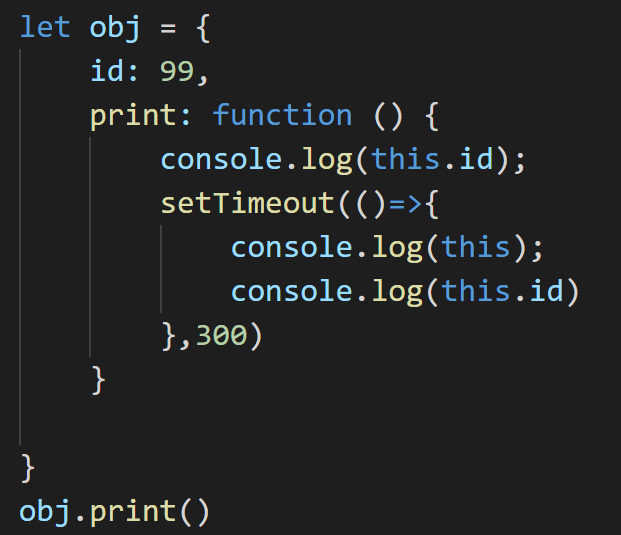

3.普通函数和箭头函数的区别
2021年4月7日
18:43
- 箭头函数的表示
- 箭头函数不能new, 没有this, 本质上是找上级作用域的this
- 正常来讲,如果是普通函数,this指向当前对象
- 但使用箭头函数,由于没有this,直接指向外部调用obj的window对象,输出undefined

- 如果window对象里面有var定义的id,输出100
- setTimeout是window调用
- 
- 使用箭头函数,没有this,不会影响this指向,this还是上级作用域链的this,指向obj
原生JS问题一
2021年4月7日
18:11
1.面向对象编程和面向过程编程的区别
2021年4月7日
18:14
2.this指向问题
2021年4月7日
18:19
3.普通函数和箭头函数的区别
2021年4月7日
18:43
4.eval函数是什么
2021年4月7日
23:21
定义和用法
eval() 函数可计算某个字符串，并执行其中的的 JavaScript 代码。
语法
eval(string)
|
参数 |
描述 |
|
string |
必需。要计算的字符串，其中含有要计算的 JavaScript 表达式或要执行的语句。 |
返回值
通过计算 string 得到的值（如果有的话）。
5.函数节流和函数防抖
2021年4月7日
23:21
函数防抖
函数节流
6.作用域链是什么
2021年4月7日
23:21
7.原型链继承的机制
2021年4月7日
23:21
call()
apply()
prototype 默认继承机制
8.垃圾回收(GC)的机制
2021年4月7日
23:21
垃圾回收（GC）：
1. 就像人生活的时间长了会产生垃圾一样，程序运行过程中也会产生垃圾，这些垃圾积攒过多以后，会导致程序运行的速度过慢，
所以我们需要一个垃圾回收的机制，来处理程序运行中产生的垃圾。
2. 当一个对象没有任何的变量或属性对它进行引用，我们将永远无法操作该对象，此时的对象就是一个垃圾，
过多会占用大量内存空间，导致程序运行变慢，所以这种垃圾必须进行清理。
3. 在JS中拥有自动的垃圾回收机制，会自动将这些垃圾对象从内存中销毁，我们不需要也不能进行垃圾回收的操作。
4. 我们需要做的只是要将不再使用的对象设置为 null 即可。
例：
var obj = new Object( );
// 对象的各种操作 . . .
obj = null ;
原生JS问题二
2021年4月8日
0:00
promsie
Map, flatMap, reduce
深拷贝是什么, 项目哪里用到深拷贝
了解ES6的Proxy
事件循环EventLoop
$(window).load和$(window).ready的区别
1.promsie
2021年4月8日
0:02
基础结构
2021年4月8日
10:32
all
2021年4月8日
10:54
同时，成功和失败的返回值是不同的，成功的时候返回的是一个结果数组，而失败的时候则返回最先被reject失败状态的值。
2. Promise.all获得的成功结果的数组里面的数据顺序和Promise.all接收到的数组顺序是一致的，即p1的结果在前，即便p1的结果获取的比p2要晚。这带来了一个绝大的好处：在前端开发请求数据的过程中，偶尔会遇到发送多个请求并根据请求顺序获取和使用数据的场景，使用Promise.all毫无疑问可以解决这个问题。
race
2021年4月8日
10:57
2.Map, flatMap, reduce
2021年4月8日
0:02
Map
flatMap
reduce
定义和用法
reduce() 方法接收一个函数作为累加器，数组中的每个值（从左到右）开始缩减，最终计算为一个值。
reduce() 可以作为一个高阶函数，用于函数的 compose。
注意: reduce() 对于空数组是不会执行回调函数的。

3.深拷贝是什么, 项目哪里用到深拷贝
2021年4月8日
0:02
浅拷贝
深拷贝
深拷贝方法
Object.create()
2021年4月8日
13:11
Object.create
4.代理
2021年4月8日
12:51
![计算机生成了可选文字:
<script>
varObj
{a：甥b：2这：{d：1e：29}}
//设置代理方法
varhandler
function(target,key,value){
set：
console．log("这里设置了属性"）；
target[key]
value
function(target,key){
get：
console．log("这里获取属性"）；
returntarget[key]
function(target,key){
has：
console.log("这里判断是否拥有属性"）；
returnkeyintarget
//设置代理
newProxy(obj,handler)
varp
29
console.log(obj,p·a）；
console.log("a"inp）；
</script>](硅谷面试高级.files/image055.png)
5.事件循环EventLoop
2021年4月8日
0:02

6.$(window).load和$(window).ready的区别
2021年4月8日
0:02
Javascript常用的设计模式
2021年4月8日
13:37
一提起设计模式，相信大家都会脱口而出，23种设计模式，五大设计原则。这里就不说了，奈何我功力远远不够啊。下面把我整理出的常用JavaScript设计模式按类型做个表格整理。本文较长，如果阅读起来不方便，可链接到我的github中，单独查看每一种设计模式。先整理这些，后续会继续补充，感兴趣的同学可以关注。
|
模式分类 |
名称 |
|
创建型 |
工厂模式 |
|
|
单例模式 |
|
|
原型模式 |
|
结构型 |
适配器模式 |
|
|
代理模式 |
|
行为型 |
策略模式 |
|
|
迭代器模式 |
|
|
观察者模式(发布-订阅模式) |
|
|
命令模式 |
|
|
状态模式 |
创建型模式
工厂模式
工厂模式中，我们在创建对象时不会对客户端暴露创建逻辑，并且是通过使用一个共同的接口来指向新创建的对象，用工厂方法代替new操作的一种模式。
|
class
Creator { class Animal { var creator = new Creator() var duck = creator.create('Duck') var chicken = creator.create('Chicken') |
小结:
单例模式
举一个书中登录框的例子，代码如下:
|
<!DOCTYPE html> <html lang="en"> <body> <button id="btn">登录</button> </body> <script> class Login { createLayout() { var oDiv = document.createElement('div') oDiv.innerHTML = '我是登录框' document.body.appendChild(oDiv) oDiv.style.display = 'none' return oDiv } } class Single { getSingle(fn) { var result; return function() { return result || (result = fn.apply(this, arguments)) } } } var oBtn = document.getElementById('btn') var single = new Single() var login = new Login() // 由于闭包，createLoginLayer对result的引用，所以当single.getSingle函数执行完之后，内存中并不会销毁result。 // 当第二次以后点击按钮，根据createLoginLayer函数的作用域链中已经包含了result，所以直接返回result // 讲获取单例和创建登录框的方法解耦，符合开放封闭原则 var createLoginLayer = single.getSingle(login.createLayout) oBtn.onclick = function() { var layout = createLoginLayer() layout.style.display = 'block' } </script> </html> |
小结:
1.单例模式的主要思想就是，实例如果已经创建，则直接返回
function
creatSingleton() {
var obj = null
// 实例如已经创建过，直接返回
if (!obj) {
obj = xxx
}
return obj
}
2.符合开放封闭原则
原型模式
用原型实例指定创建对象的种类，并且通过拷贝这些原型创建新的对象。--百度百科
在JavaScript中，实现原型模式是在ECMAScript5中，提出的Object.create方法，使用现有的对象来提供新创建的对象的__proto__。
var
prototype = {
name: 'Jack',
getName: function() {
return this.name
}
}
var obj = Object.create(prototype, {
job: {
value: 'IT'
}
})
console.log(obj.getName())
// Jack
console.log(obj.job) //
IT
console.log(obj.__proto__ === prototype)
//true
更多关于prototype的知识可以看我之前的JavaScript中的面向对象、原型、原型链、继承,下面列一下关于prototype的一些使用方法
1. 方法继承
var
Parent = function() {}
Parent.prototype.show = function() {}
var Child = function() {}
// Child继承Parent的所有原型方法
Child.prototype = new Parent()
2. 所有函数默认继承Object
var Foo =
function() {}
console.log(Foo.prototype.__proto__ === Object.prototype) // true
3. Object.create
var proto
= {a: 1}
var propertiesObject = {
b: {
value: 2
}
}
var obj = Object.create(proto, propertiesObject)
console.log(obj.__proto__ === proto) //
true
4. isPrototypeOf
prototypeObj是否在obj的原型链上
prototypeObj.isPrototypeOf(obj)
5. instanceof
contructor.prototype是否出现在obj的原型链上
obj instanceof contructor
6. getPrototypeOf
Object.getPrototypeOf(obj) 方法返回指定对象obj的原型（内部[[Prototype]]属性的值）
Object.getPrototypeOf(obj)
7. setPrototypeOf
设置一个指定的对象的原型 ( 即, 内部[[Prototype]]属性）到另一个对象或 null
var obj =
{}
var prototypeObj = {}
Object.setPrototypeOf(obj, prototypeObj)
console.log(obj.__proto__ === prototypeObj)
// true
结构型模式
适配器模式
举一个书中渲染地图的例子
class
GooleMap {
show() {
console.log('渲染谷歌地图')
}
}
class BaiduMap {
show() {
console.log('渲染百度地图')
}
}
function render(map) {
if (map.show instanceof Function)
{
map.show()
}
}
render(new GooleMap()) //
渲染谷歌地图
render(new BaiduMap()) // 渲染百度地图
但是假如BaiduMap类的原型方法不叫show，而是叫display，这时候就可以使用适配器模式了，因为我们不能轻易的改变第三方的内容。在BaiduMap的基础上封装一层，对外暴露show方法。
class
GooleMap {
show() {
console.log('渲染谷歌地图')
}
}
class BaiduMap {
display() {
console.log('渲染百度地图')
}
}
// 定义适配器类, 对BaiduMap类进行封装
class BaiduMapAdapter {
show() {
var baiduMap = new
BaiduMap()
return baiduMap.display()
}
}
function render(map) {
if (map.show instanceof Function)
{
map.show()
}
}
render(new GooleMap())
// 渲染谷歌地图
render(new BaiduMapAdapter()) // 渲染百度地图
小结:
代理模式
本文举一个使用代理对象加载图片的例子来理解代理模式,当网络不好的时候，图片的加载需要一段时间，这就会产生空白，影响用户体验，这时候我们可在图片真正加载完之前，使用一张loading占位图片，等图片真正加载完再给图片设置src属性。
class
MyImage {
constructor() {
this.img = new Image()
document.body.appendChild(this.img)
}
setSrc(src) {
this.img.src = src
}
}
class ProxyImage {
constructor() {
this.proxyImage = new
Image()
}
setSrc(src) {
let myImageObj = new
MyImage()
myImageObj.img.src = 'file://xxx.png'
//为本地图片url
this.proxyImage.src =
src
this.proxyImage.onload =
function() {
myImageObj.img.src =
src
}
}
}
var proxyImage = new
ProxyImage()
proxyImage.setSrc('http://xxx.png') //服务器资源url
本例中，本体类中有自己的setSrc方法，如果有一天网络速度已经不需要预加载了，我们可以直接使用本体对象的setSrc方法,，并且不需要改动本体类的代码，而且可以删除代理类。
//
依旧可以满足需求
var myImage = new
MyImage()
myImage.setSrc('http://qiniu.sunzhaoye.com/CORS.png')
小结:
行为型模式
策略模式
定义一系列的算法，把它们一个个封装起来，并使它们可以替换
var fnA =
function(val) {
return val * 1
}
var fnB = function(val) {
return val * 2
}
var fnC = function (val) {
return val * 3
}
var calculate = function(fn, val) {
return fn(val)
}
console.log(calculate(fnA, 100))//
100
console.log(calculate(fnB, 100))// 200
console.log(calculate(fnC, 100))// 300
迭代器模式
直接上代码, 实现一个简单的迭代器
class
Creater {
constructor(list) {
this.list = list
}
// 创建一个迭代器，也叫遍历器
createIterator() {
return new
Iterator(this)
}
}
class Iterator {
constructor(creater) {
this.list =
creater.list
this.index = 0
}
// 判断是否遍历完数据
isDone() {
if (this.index >=
this.list.length) {
return true
}
return false
}
next() {
return
this.list[this.index++]
}
}
var arr = [1, 2, 3, 4]
var creater = new Creater(arr)
var iterator = creater.createIterator()
console.log(iterator.list) // [1, 2, 3,
4]
while (!iterator.isDone()) {
console.log(iterator.next())
// 1
// 2
// 3
// 4
}
ES6中的迭代器:
JavaScript中的有序数据集合包括：
注意: Object不是有序数据集合
以上有序数据集合都部署了Symbol.iterator属性，属性值为一个函数，执行这个函数，返回一个迭代器，迭代器部署了next方法，调用迭代器的next方法可以按顺序访问子元素
以数组为例测试一下，在浏览器控制台中打印测试如下：
var arr = [1, 2, 3, 4]
var iterator = arr[Symbol.iterator]()
console.log(iterator.next())
// {value: 1, done: false}
console.log(iterator.next()) // {value:
2, done: false}
console.log(iterator.next()) // {value:
3, done: false}
console.log(iterator.next()) // {value:
4, done: false}
console.log(iterator.next()) // {value:
undefined, done: true}
小结：
观察者模式(订阅-发布模式)
先实现一个简单的发布-订阅模式，代码如下:
class
Event {
constructor() {
this.eventTypeObj = {}
}
on(eventType, fn) {
if
(!this.eventTypeObj[eventType]) {
//
按照不同的订阅事件类型，存储不同的订阅回调
this.eventTypeObj[eventType]
= []
}
this.eventTypeObj[eventType].push(fn)
}
emit() {
//
可以理解为arguments借用shift方法
var eventType =
Array.prototype.shift.call(arguments)
var eventList =
this.eventTypeObj[eventType]
for (var i = 0; i <
eventList.length; i++) {
eventList[i].apply(eventList[i], arguments)
}
}
remove(eventType, fn) {
// 如果使用remove方法，fn为函数名称，不能是匿名函数
var eventTypeList =
this.eventTypeObj[eventType]
if (!eventTypeList) {
// 如果没有被人订阅改事件，直接返回
return false
}
if (!fn) {
// 如果没有传入取消订阅的回调函数，则改订阅类型的事件全部取消
eventTypeList &&
(eventTypeList.length = 0)
} else {
for (var i = 0; i <
eventTypeList.length; i++) {
if (eventTypeList[i] ===
fn) {
eventTypeList.splice(i, 1)
//
删除之后，i--保证下轮循环不会漏掉没有被遍历到的函数名
i--;
}
}
}
}
}
var handleFn = function(data) {
console.log(data)
}
var event = new Event()
event.on('click', handleFn)
event.emit('click', '1') //
1
event.remove('click', handleFn)
event.emit('click', '2') // 不打印
以上代码可以满足先订阅后发布，但是如果先发布消息，后订阅就不满足了。这时候我们可以稍微修改一下即可满足先发布后订阅，在发布消息时，把事件缓存起来，等有订阅者时再执行。代码如下：
class
Event {
constructor() {
this.eventTypeObj = {}
this.cacheObj = {}
}
on(eventType, fn) {
if
(!this.eventTypeObj[eventType]) {
//
按照不同的订阅事件类型，存储不同的订阅回调
this.eventTypeObj[eventType]
= []
}
this.eventTypeObj[eventType].push(fn)
// 如果是先发布，则在订阅者订阅后，则根据发布后缓存的事件类型和参数，执行订阅者的回调
if (this.cacheObj[eventType])
{
var cacheList =
this.cacheObj[eventType]
for (var i = 0; i <
cacheList.length; i++) {
cacheList[i]()
}
}
}
emit() {
// 可以理解为arguments借用shift方法
var eventType =
Array.prototype.shift.call(arguments)
var args = arguments
var that = this
function cache() {
if
(that.eventTypeObj[eventType]) {
var eventList =
that.eventTypeObj[eventType]
for (var i = 0; i <
eventList.length; i++) {
eventList[i].apply(eventList[i], args)
}
}
}
if (!this.cacheObj[eventType])
{
this.cacheObj[eventType] =
[]
}
// 如果先订阅，则直接订阅后发布
cache(args)
// 如果先发布后订阅，则把发布的事件类型与参数保存起来，等到有订阅后执行订阅
this.cacheObj[eventType].push(cache)
}
}
小结:
命令模式
在命令的发布者和接收者之间，定义一个命令对象，命令对象暴露出一个统一的接口给命令的发布者，而命令的发布者不用去管接收者是如何执行命令的，做到命令发布者和接收者的解耦。
举一个如果页面中有3个按钮，给不同按钮添加不同功能的例子，代码如下：
<!DOCTYPE
html>
<html lang="en">
<head>
<meta
charset="UTF-8">
<title>cmd-demo</title>
</head>
<body>
<div>
<button
id="btn1">按钮1</button>
<button
id="btn2">按钮2</button>
<button
id="btn3">按钮3</button>
</div>
<script>
var btn1 =
document.getElementById('btn1')
var btn2 =
document.getElementById('btn2')
var btn3 =
document.getElementById('btn3')
// 定义一个命令发布者(执行者)的类
class Executor {
setCommand(btn, command)
{
btn.onclick = function() {
command.execute()
}
}
}
// 定义一个命令接收者
class Menu {
refresh() {
console.log('刷新菜单')
}
addSubMenu() {
console.log('增加子菜单')
}
}
// 定义一个刷新菜单的命令对象的类
class RefreshMenu {
constructor(receiver)
{
// 命令对象与接收者关联
this.receiver =
receiver
}
// 暴露出统一的接口给命令发布者Executor
execute() {
this.receiver.refresh()
}
}
// 定义一个增加子菜单的命令对象的类
class AddSubMenu {
constructor(receiver)
{
// 命令对象与接收者关联
this.receiver =
receiver
}
//
暴露出统一的接口给命令发布者Executor
execute() {
this.receiver.addSubMenu()
}
}
var menu = new Menu()
var executor = new Executor()
var refreshMenu = new RefreshMenu(menu)
// 给按钮1添加刷新功能
executor.setCommand(btn1,
refreshMenu)
var addSubMenu = new AddSubMenu(menu)
// 给按钮2添加增加子菜单功能
executor.setCommand(btn2,
addSubMenu)
//
如果想给按钮3增加删除菜单的功能，就继续增加删除菜单的命令对象和接收者的具体删除方法，而不必修改命令对象
</script>
</body>
</html>
状态模式
举一个关于开关控制电灯的例子，电灯只有一个开关，第一次按下打开弱光，第二次按下打开强光，第三次按下关闭。
<!DOCTYPE
html>
<html lang="en">
<head>
<meta
charset="UTF-8">
<title>state-demo</title>
</head>
<body>
<button
id="btn">开关</button>
<script>
// 定义一个关闭状态的类
class OffLightState {
constructor(light)
{
this.light =
light
}
//
每个类都需要这个方法，在不同状态下按都需要触发这个方法
pressBtn() {
this.light.setState(this.light.weekLightState)
console.log('开启弱光')
}
}
// 定义一个弱光状态的类
class WeekLightState {
constructor(light)
{
this.light =
light
}
pressBtn() {
this.light.setState(this.light.strongLightState)
console.log('开启强光')
}
}
// 定义一个强光状态的类
class StrongLightState
{
constructor(light)
{
this.light = light
}
pressBtn() {
this.light.setState(this.light.offLightState)
console.log('关闭电灯')
}
}
class Light {
constructor() {
this.offLightState = new
OffLightState(this)
this.weekLightState = new
WeekLightState(this)
this.strongLightState =
new StrongLightState(this)
this.currentState =
null
}
setState(newState)
{
this.currentState =
newState
}
init() {
this.currentState =
this.offLightState
}
}
let light = new Light()
light.init()
var btn =
document.getElementById('btn')
btn.onclick = function()
{
light.currentState.pressBtn()
}
</script>
</body>
</html>
如果这时候需要增加一个超强光，则只需增加一个超强光的类，并添加pressBtn方法，改变强光状态下，点击开关需要把状态更改为超强光，超强光状态下，点击开关把状态改为关闭即可，其他代码都不需要改动。
class
StrongLightState {
constructor(light) {
this.light = light
}
pressBtn() {
this.light.setState(this.light.superLightState)
console.log('开启超强光')
}
}
class SuperLightState {
constructor(light) {
this.light = light
}
pressBtn() {
this.light.setState(this.light.offLightState)
console.log('关闭电灯')
}
}
class Light {
constructor() {
this.offLightState = new
OffLightState(this)
this.weekLightState = new WeekLightState(this)
this.strongLightState = new
StrongLightState(this)
this.superLightState = new
SuperLightState(this)
this.currentState =
null
}
setState(newState) {
this.currentState =
newState
}
init() {
this.currentState =
this.offLightState
}
}
小结：
终于到最后可，历时多日地阅读与理解，并记录与整理笔记，目前整理出10中JavaScript中常见的设计模式，后续会对笔记继续整理，然后加以补充。由于笔者功力比较浅，如有问题，还望大家多多指正，谢谢。
堆和栈
2021年4月8日
14:14
1、堆栈空间分配区别
栈（操作系统）：由操作系统（编译器）自动分配释放 ，存放函数的参数值，局部变量的值等。其操作方式类似于数据结构中的栈。
堆（操作系统）： 一般由程序员分配释放， 若程序员不释放，程序结束时可能由OS回收，分配方式倒是类似于链表。
2、堆栈缓存方式区别
栈使用的是一级缓存， 它们通常都是被调用时处于存储空间中，调用完毕立即释放。
堆则是存放在二级缓存中，生命周期由虚拟机的垃圾回收算法来决定（并不是一旦成为孤儿对象就能被回收）。所以调用这些对象的速度要相对来得低一些。
3、堆栈数据结构区别
堆（数据结构）：堆可以被看成是一棵树，如：堆排序。
栈（数据结构）：一种先进后出的数据结构。
已使用 OneNote 创建。
{kind=link}